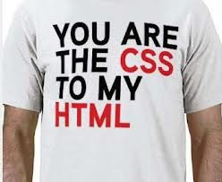

Webtechnology
Chapter 3 - Cascading Style Sheets
Basics of CSS
Basics of CSS
- CSS allows you to create rules that specify how the content of an element should appear.
- The key to understanding how CSS works is to imagine that there is an invisible box around every HTML element.
CSS style rules
- CSS works by associating rules with HTML elements. These rules govern how the content of specified elements should be displayed.
-
A CSS rule contains two parts:
- Selectors indicate which element the rule applies to.
- Declarations indicate how the elements referred to in the selector should be styled.
p
{
color: red;
}
- Declarations are split into two parts (a property and a value), and are separated by a colon.
CSS style rules
- You can specify multiple selectors (seperated by commas)
h1, h2, h3
{
color: red;
font-family: arial;
}
- You can specify multiple declarations (seperated by semicolon)
p
{
color: red;
background-color: #18ff45;
}
Where to place all this CSS ?
There are three options.
Where to place all this CSS ?
-
External CSS file
- Place your CSS code in an external file and give it a .css extension.
- Add a link to the external file in your HTML head section.
<link href="css/styles.css" type="text/css" rel="stylesheet" />
- This is the prefered option since it maximally seperates content from presentation and stylesheets can be easily reused.
- Multiple stylesheets can be used.
Where to place all this CSS ?
-
Internal
- Place your CSS code inside the head section.
- Placed between style tags.
<style type="text/css">
body
{
font-family: arial;
background-color: rgb(185,179,175);
}
h1
{
color: #FFFFFF;
}
</style>
- Only allows reuse inside the current document.
Where to place all this CSS ?
-
Inline
- Placed in html starttag.
- Inside the style attribute
<p style="color:red; font-family: arial;">This is text</p>
- Allows no reuse.
- This is from the olden days. Do NOT use this!
CSS Selectors
CSS Selectors
- There are many different types of CSS selector that allow you to target rules to specific elements in an HTML document.
- CSS selectors are case sensitive, so they must match element names and attribute values exactly.
CSS Selectors
Universal Selector
- Applies to all elements in the document
*
{
font-weight: bold;
}
Targets all elements on the page.
CSS Selectors
Type/Element Selector
- Matches element names
h1, h2, h3
{
text-decoration: underline;
}
Targets the h1, h2 and h3 elements.
CSS Selectors
Class Selector
- Matches an element whose class attribute has a value that matches the one specified after the period (or full stop) symbol
.note
{
font-size: 1.2em;
}
Targets any element whose class attribute has a value of note.
p.note
{
font-size: 1.2em;
}
Targets only p elements whose class attribute has a value of note.
CSS Selectors
ID Selector
- Matches an element whose id attribute has a value that matches the one specified after the pound or hash symbol
#introduction
{
border-color: red;
}
Targets the element whose id attribute has a value of introduction.
CSS Selectors
Child Selector
- Matches an element that is a direct child of another
li>a
{
text-decoration: none;
}
Targets any a elements that are direct children of an li element (but not other a elements in the page).
CSS Selectors
Descendant Selector
- Matches an element that is a descendent of another specified element (not just a direct child of that element)
p a
{
text-decoration: none;
}
Targets any q elements that sit inside a p element, even if there are other elements nested between them.
CSS Selectors
Adjacent Sibling Selector
- Matches an element that is the next sibling of another
h1+p
{
text-decoration: none;
}
Targets the first p element after any h1 element (but not other p elements)
CSS Selectors
General Sibling Selector
- Matches an element that is a sibling of another, although it does not have to be the directly preceding element
h1~p
{
text-decoration: none;
}
If you had two p elements that are siblings of an h1 element, this rule would apply to both
Cascading and Inheritance
How CSS Rules Cascade
- If there are two or more rules that apply to the same element, it is important to understand which will take precedence.
- If the two selectors are identical, the latter of the two will take precedence.
- If one selector is more specific than the others, the more specific rule will take precedence over more general ones.
Important CSS rules
- You can add
!importantafter any property value to indicate that it should be considered more important than other rules that apply to the same element.
p
{
color: blue !important;
}
p
{
color: violet;
}
How CSS Rules are Inherited
- Some properties are inherited by child elements.
- However not all properties are inherited since this would result in complex stylesheets.
How CSS Rules are Inherited
- Examples of properties that are inherited
- color, font-family, ...
- Examples of properties that are NOT inherited
- border, padding, margin, background, ...
- You can force inheritance by using
inheritas property value.
p
{
border: inherit;
}